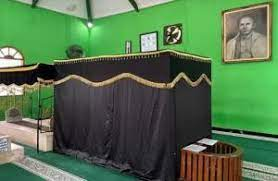
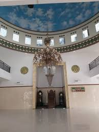

Masjid At Taubah
Masjid At Taubah termasuk salah satu situs sejarah di Ibukota Jakarta. Masjid ini dibangun oleh Habib Abdullah Ja'far Al Hadad, kakek buyut Habib Kuncung, sekitar abad ke-18.
Awalnya hanya terdapat dua makam. Seiring berjalannya waktu, jumlah makam semakin bertambah. Kesemua makam itu adalah keturunan dari pendiri masjid, termasuk Habib Kuncung
Bagi masyarakat Muslim Ibukota, Habib Kuncung merupakan tokoh yang memiliki derajat tertentu. Ini karena sang ulama dipercaya memiliki sejumlah kelebihan yang membedakan dengan manusia biasa.
Habib kuncung dilahirkan di Kota Ghurfah, Tarim, Hadramaut, tanggal 26 Sya'ban 1254 H. Saat tiba di Betawi, Masjid At Taubah menjadi petilasan Habib Kuncung dalam menjalankan dakwah Islam.
"Habib Kuncung itu memang pulang perginya dia biasa di masjid ini (Masjid At Taubah). Dia sering istirahat di sini. selain itu, ada juga petilasan Habib Kuncung di kali dekat Masjid, ada pancuran untuk bersih-bersih masjid," kata pengurus Masjid At Taubah, Muhammad, Kamis, 16 Juni 2016.